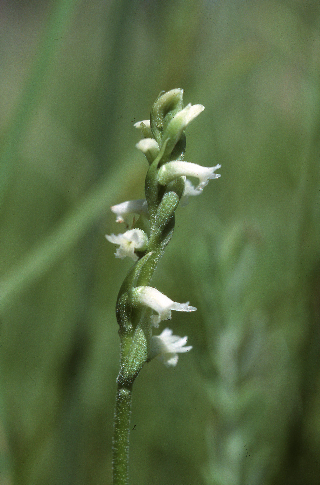
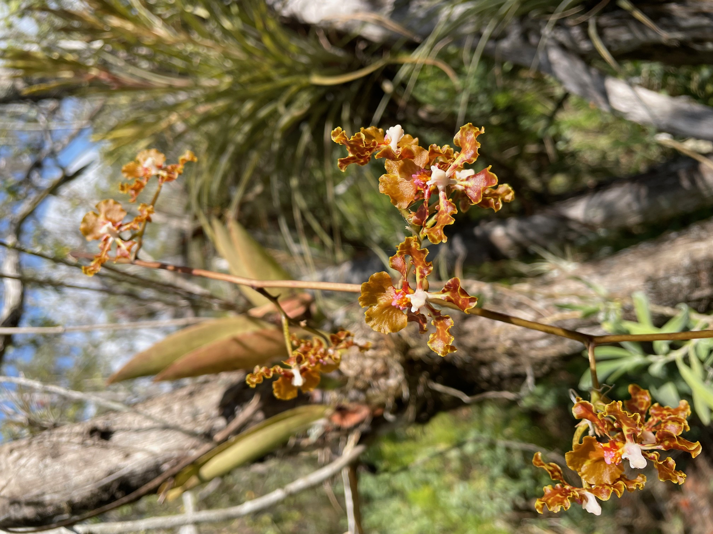

Código
library(readr)
library(tidyverse)
library(dplyr)
library(gt)
library(flextable) # fallback para Word/PDF cuando gt::as_word falla
library(ftExtra) # colformat_md() para procesar *italics* en celdasEn esta sección se hace una recopilación de los estudios de dinámica poblacional en orquídeas que han usado matrices de transición de estados y de edades. Se identifican algunos de los temas principales de los trabajos.
En el siguiente cuadro se presentan los estudios de dinámica poblacional en orquídeas que usaron MPP y las preguntas principales que los autores intentaron responder. En la gran mayoría de los trabajos se evalúan múltiples hipótesis/ideas sobre la dinámica poblacional de las orquídeas. Para información específica sobre la metodología usada en cada estudio, se recomienda revisar los trabajos originales.
Clave de las variables:
library(readr)
library(tidyverse)
library(dplyr)
library(gt)
library(flextable) # fallback para Word/PDF cuando gt::as_word falla
library(ftExtra) # colformat_md() para procesar *italics* en celdas| Género | Especies | Riesgo | Var. esp. | Var. temp. | Latencia | Est. param. | Hist. vida | Otro | Referencia |
|---|---|---|---|---|---|---|---|---|---|
| Aspasia | principissa | Si | - | Si | - | - | - | Zotz y Schmidt (2006) | |
| Brassavola | cucullata | Si | Si | Si | - | - | - | IPM, Transient Dynamics, Transfer Function | Ackerman et al. (2020) |
| Broughtonia | cubensis | Si | Si | Si | - | - | - | Transient Dynamics | Raventós et al. (2021) |
| Caladenia | amoena | Si | - | - | Si | Si | Si | Selección de modelos, método para estimar latencia | Tremblay et al. (2009a) Tremblay et al. (2009b); |
| Caladenia | argocalla | Si | - | - | Si | Si | Si | Selección de modelos, método para estimar latencia | Tremblay et al. (2009a) Tremblay et al. (2009b) |
| Caladenia | clavigera | Si | - | - | Si | Si | Si | Selección de modelos, método para estimar latencia | Tremblay et al. (2009a) Tremblay et al. (2009b) |
| Caladenia | elegans | Si | - | - | Si | Si | Si | Selección de modelos, método para estimar latencia | Tremblay et al. (2009a) Tremblay et al. (2009b) |
| Caladenia | graniticola | Si | - | - | Si | Si | Si | Selección de modelos, método para estimar latencia | Tremblay et al. (2009a) Tremblay et al. (2009b) |
| Caladenia | macroclavia | Si | - | - | Si | Si | Si | Selección de modelos, método para estimar latencia | Tremblay et al. (2009a) Tremblay et al. (2009b) |
| Caladenia | oenochila | Si | - | - | Si | Si | Si | Selección de modelos, método para estimar latencia | Tremblay et al. (2009a) Tremblay et al. (2009b) |
| Caladenia | rosella | Si | - | - | Si | Si | Si | Selección de modelos, método para estimar latencia | Tremblay et al. (2009a) Tremblay et al. (2009b) |
| Caladenia | valida | Si | - | - | Si | Si | Si | Selección de modelos, método para estimar latencia | Tremblay et al. (2009a) Tremblay et al. (2009b) |
| Caladenia | orientalis | Si | Si | Si | Si | - | - | Interacciones abióticas | Coates y Duncan (2009) |
| Cephalanthera | longifolia | - | - | - | Si | Si | Si | Interacciones abióticas y bióticas | Shefferson et al. (2012) |
| Cleistes | divaricata var. divaricata | Si | Si | Si | Si | Si | - | Gregg (1991) | |
| Cleistes | divaricata var. bifaria | Si | Si | Si | Si | Si | - | Gregg (1991) | |
| Cleistes | bifaria | - | Si | - | Si | - | - | Estructura de tamaño y estado | Gregg y Kéry (2006) |
| Corallorhiza | trifida | Si | - | Si | Si | - | - | Iriondo Alegria et al. (2009) | |
| Crepidium | acuminatum | Si | - | Si | - | - | - | Efecto de cosecha | Timsina et al. (2021) |
| Cypripedium | acaule | - | - | - | - | Si | - | Edad de individuos reproductivos | Cochran y Ellner (1992) |
| Cypripedium | calceolus | Si | Si | Si | Si | - | - | Selección de modelos | Nicolè et al. (2005) |
| Cypripedium | calceolus | Si | Si | Si | Si | - | - | Efecto de aislamiento | Garcı́a González et al. (2010) |
| Cypripedium | calceolus | - | - | - | - | - | - | Costo de latencia, Interacciones abióticas y bióticas | Shefferson et al. (2012) |
| Cypripedium | fasciculatum | Si | Si | Si | Si | - | - | Selección de modelos, Interacciones abióticas | Thorpe et al. (2011) |
| Cypripedium | parviflorum | - | - | - | Si | - | Si | Shefferson et al. (2014) | |
| Cypripedium | reginae | - | Si | - | Si | - | Si | Selección de modelos, interacciones bióticas | Kéry y Gregg (2004) |
| Cypripedium | lentiginosum | - | - | - | - | Si | - | Leslie matrix | Zhongjian et al. (2008) |
| Dactylorhiza | hatagirea | Si | Si | Si | Si | - | - | Efecto de cosecha | Chapagain et al. (2021) |
| Dactylorhiza | lapponica | - | Si | Si | Si | - | - | Efecto antropogénico, interacciones abióticas | Sletvold et al. (2010); Sletvold et al. (2013) |
| Dendrophylax | lindenii | Si | - | Si | - | - | - | Efecto de densidad, los datos de la matriz no están disponibles | González-Hernández (2009); Raventós et al. (2015) |
| Epidendrum | xanthinum | Si | Si | - | - | - | - | Comparación de poblaciones | Farfán Camargo (2008) |
| Epipactis | atrorubens | Si | Si | Si | Si | - | - | Incorporación de variable de endogamia | Hens et al. (2017) |
| Epipactis | atrorubens | - | - | - | - | - | - | Jäkäläniemi et al. (2011) | |
| Erycina | crista-galli | Si | Si | - | - | - | - | Mondragón et al. (2007) | |
| Erycina | crista-galli | - | - | - | - | - | - | Maldonado Flores (2005) | |
| Guarianthe | aurantiaca | Si | Si | - | - | - | - | Efecto de cosecha | Mondragón (2009) |
| Herminium | monorchis | Si | - | Si | Si | - | - | Efecto abiótico | Wells et al. (1998) |
| Himantoglossum | hircinum | Si | - | Si | - | - | - | Efecto abiótico: sequía | Wells et al. (1998) |
| Himantoglossum | hircinum | Si | - | Si | - | - | - | Modelando expansión | Carey (1998) |
| Himantoglossum | hircinum | Si | - | Si | Si | - | - | Efecto abiótico: Precipitación y Temp del suelo | Pfeifer y Jetschke (2006) |
| Isotria | medeoloides | Si | - | Si | - | - | - | Tratamiento del dosel | Dibble et al. (2019) |
| Jacquiniella | leucomelana | Si | - | Si | - | - | - | Metapopulation approach | Winkler et al. (2009) |
| Jacquiniella | teretifolia | Si | - | Si | - | - | - | Metapopulation approach | Winkler et al. (2009) |
| Laelia | autumnalis | Si | Si | Si | - | - | Efecto de cosecha | Emeterio-Lara et al. (2021) | |
| Laelia | speciosa | Si | - | Si | - | - | - | Efecto de cosecha | Hernández-Apolinar (1992) |
| Lepanthes | caritensis | Si | Si | Si | - | - | - | Tremblay (1997) | |
| Lepanthes | caritensis | Si | Si | Si | - | - | - | Efecto de huracanes | Crain et al. (2019) |
| Lepanthes | eltoroensis | Si | Si | - | - | - | - | Tamaño efectivo de Población, Ne y largo de vida | Tremblay y Ackerman (2001) |
| Lepanthes | eltoroensis | Si | Si | Si | - | - | - | Tremblay y Hutchings (2003) | |
| Lepanthes | eltoroensis | Si | Si | Si | Si | - | - | Nueva metodología para estimar parámetros | Tremblay et al. (2021) |
| Lepanthes | rubripetala | - | - | - | - | - | - | Tamaño efectivo de Población, Ne y largo de vida | Tremblay y Ackerman (2001) |
| Lepanthes | rubripetala | Si | Si | Si | - | - | - | Dinámica de transiciones | Tremblay et al. (2015) |
| Lepanthes | rupestris | - | - | - | - | - | - | Tamaño efectivo de Población, Ne y largo de vida | Tremblay y Ackerman (2001) |
| Lepanthes | acuminata | Si | - | - | - | - | - | Dinámica de transiciones | Raventós et al. (2018) |
| Lycaste | aromatica | Si | - | Si | - | - | - | Metapopulation approach | Winkler et al. (2009) |
| Neotinea | ustulata | Si | Si | - | Si | - | Si | Método para estimar latencia | Shefferson y Tali (2007) |
| Oeceoclades | maculata | Si | Si | Si | - | - | - | Especie invasiva | Riverón-Giró et al. (2019) |
| Oncidium | poikilostalix | Si | - | - | - | - | - | Dinámica de transiciones | Raventós et al. (2018) |
| Orchis | purpurea | Si | - | Si | - | - | - | LTRE | Jacquemyn et al. (2010) |
| Orchis | ustulata | Si | Si | - | - | - | - | mismo que Neotinea ustulata | Tali (2002) |
| Phaius | australis | Si | Si | - | - | - | - | Efecto espacial y abiótico | Simmons (2016) |
| Platanthera | hookeri | Si | Si | - | - | - | - | Reddoch y Reddoch (2007) | |
| Platanthera | praeclara | Si | Si | Si | Si | - | - | Variación temporal | Sieg y King (1995) |
| Platanthera | macrophylla | Si | Si | Si | - | - | - | Incluye estado de protocormo | Cleavitt et al. (2017) Berry y Cleavitt (2021) |
| Platanthera | orbiculata | Si | Si | Si | - | - | - | Incluye estado de protocormo | Cleavitt et al. (2017) Berry y Cleavitt (2021) |
| Prasophyllum | correctum | Si | Si | Si | - | - | Efecto de fuego | Coates et al. (2006) | |
| Pseudorchis | albida | - | - | - | - | - | - | Štípková (2013) | |
| Rodriguezia | granadensis | Si | Si | Si | - | - | Efecto antropogénico, pendiente de digitalizar | Ospina-Calderón et al. (2023) | |
| Serapias | cordigera | Si | Si | Si | Si | - | - | Efecto antropogénico | Pellegrino y Bellusci (2014) |
| Spathoglottis | plicata | Si | Si | Si | - | - | - | Orquídea invasiva y interacciones bióticas | Falcón et al. (2017) |
| Spiranthes | delitescens | Si | Si | Si | Si | - | - | Efecto abiótico: sequía | McClaran y Sundt (1992) |
| Spiranthes | parksii | Si | - | - | - | - | Efecto abiótico: herbivoría | Wonka (2010) | |
| Telipogon | helleri | Si | - | - | - | - | Si | Dinámica de transición | Raventós et al. (2018) |
| Tolumnia | variegata | Si | Si | Si | - | - | Si | El costo de reproducción | Calvo (1993) |
| Trichocentrum | undulatum | - | - | - | - | - | Efecto de aislamiento | Borrero et al. (2023) |


Abreviaturas empleadas en la columna de métodos
En la siguiente lista incluimos algunos de los trabajos de dinámica poblacional que no usan MPP para responder a su pregunta. La lista es muy grande y no es exhaustiva. Incluye trabajos que usan otros métodos de estimación de parámetros, como modelos de regresión, o que usan IPM (Integral Projection Models, modelos de proyección integral), pero no usan matrices de transición de estados o edades, que es el método alterno de estimación de parámetros que se usa en este libro.
| Género | Especies | Otro | Referencia |
|---|---|---|---|
| Isotria | medeoloides | no matrix | Alahuhta et al. (2017) |
| Cyclopogon | luteoalbus | no matrix | Juárez et al. (2014) |
| Cypripedium | calceolus | no matrix | Davison et al. (2013) |
| Cypripedium | candidum | no matrix | Shefferson et al. (2017) |
| Gymnadenia | conopsea | no matrix | Øien y Moen (2002) |
| Ophrys | sphegodes | no matrix | Hutchings (2010) |
| Ophrys | sphegodes | no matrix | Shefferson et al. (2017) |
| Orchis | morio | no matrix | Wells et al. (1998) |
| Spiranthes | spiralis | no matrix | Jacquemyn et al. (2007) |